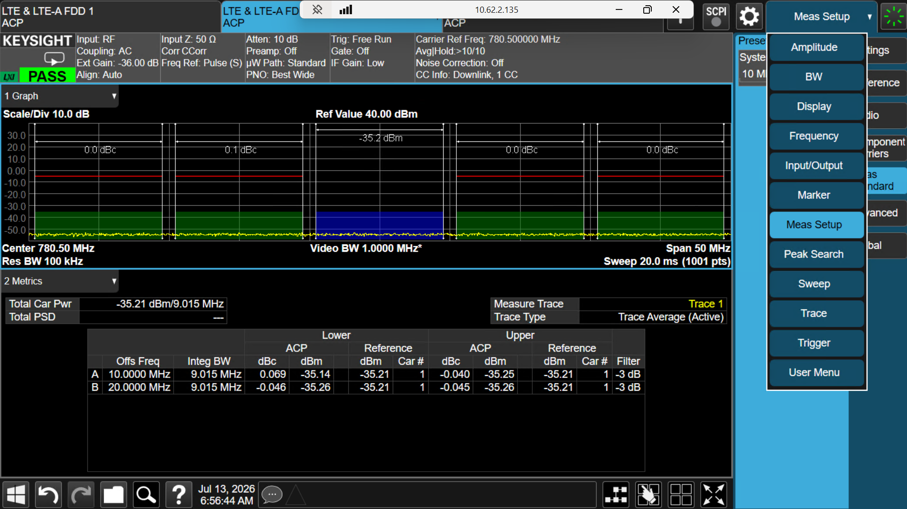
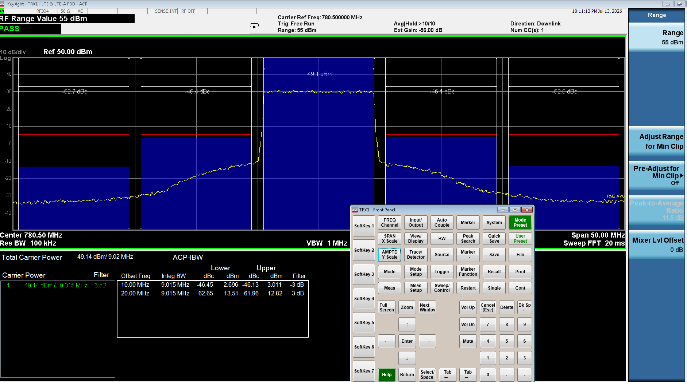
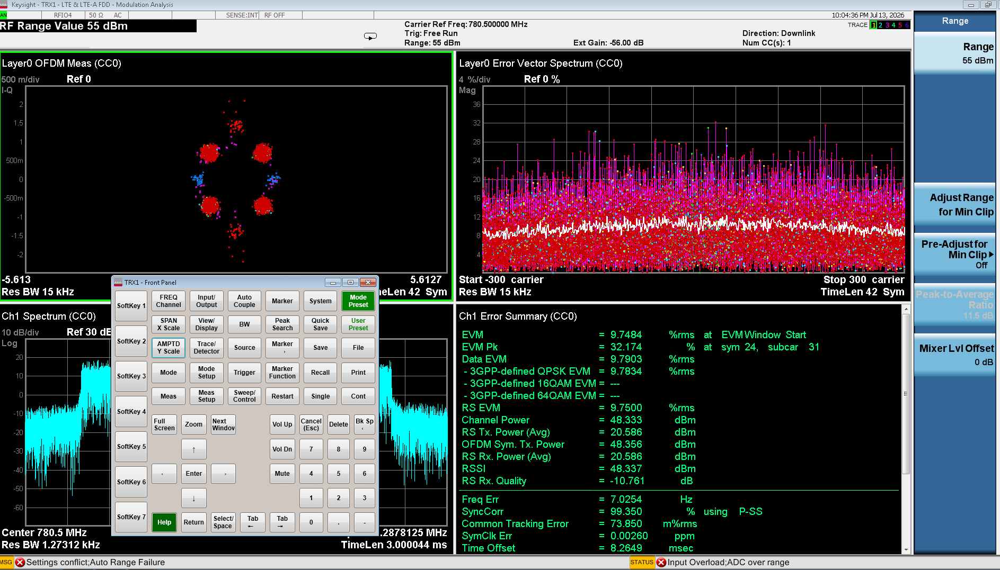

3GPP §6.6.2 · test_Tx_ACLR · Cadence P0/P1/P2 · ETM 1.1 · frequency fm
| Hardware | Limit | Tolerance | Band Override |
|---|---|---|---|
| COMBA OPT7.2 / OPT8 | ≥ 45 dB | ±0.8 dB | None |
| FHGW Box / Metro | ≥ 55 dB | ±0.8 dB | b0407, b0307_2nd_run, b082028_2nd_run, b41_1st_run → 52 dB |
| MiniMetro | ≥ 55 dB | ±1 dB | None |
measure_test_Tx_ACLR (features/tech_4g/conformance_unified_lte_tx_speed.py) · analyzer setup config_te_for_lte_acp (infrastructure/utils.py) · fetch sa_acp_acquire_averaged (test_equipment/te_equipments.py).# config_te_for_lte_acp (utils.py)
INST:SEL LTEAFDD
CONF:ACPower
MMEMory:LOAD:MASK ".../ACP_BS/ACP_BS_{bw}MHz_pairE-UTRA_CatB.mask"
:SENSe:ACPower:OFFSet:LIST:STATe ON,ON,OFF,OFF,OFF # A(+/-BW) + B(+/-2xBW)
:SENSe:ACPower:AVERage:COUNt 10
:SENSe:ACPower:AVERage:STATe ON
# sa_acp_acquire_averaged (te_equipments.py)
:INIT:ACP ; verify_opc() ; FETCh:ACPower10? # -> ~40-value tableResult parse: ACLR_CHANNEL_IDX = (3,13,23,33) → abs() of A_lower, A_upper, B_lower, B_upper.test_Tx_ACLR.min_limit = 55 dBc, tolerance = 0. limits_validation_aclr (utils.py): each offset PASS if meas > limit (higher = better).band_min_limit["{fhgw_band}_{dualband_step}"] → 52 dBc for the 2nd-run / dual-band cases (b0307_second_run, b0407, b082028_second_run, b41_first_run).measure_test_Tx_ACLR was the only TX measure missing the analyzer auto-range that every other TX test already did. Added before the ACP read:ant.equiphandler.sa_set_atten_for_min_clipping() # SENSe:POWer:RF:RANGe:OPTimize IMMediate"Min-clip" = adjust the analyzer input range for max dynamic range without overload. Without it, the per-RFFE isolated (lower-power) signal read ACLR near the noise floor → degraded 51–52 dBc; with it each isolated path auto-ranges → 54.5–55.6 dBc (+2–3 dB). EVM always passed because its measure already auto-ranged. (See FC20 for per-RFFE IQ playback.)

3GPP §6.6.2 · test_Tx_ACLR · framework: ruauto · concrete setup: RCT-4G-GR-AAU-B1B3-TRX7 · paths are repo-relative to ruauto/source/ unless noted · this is the "how the automation actually does it" companion to the ACLR card above
test_Tx_ACLR registration declares freqs/ETMs & report columns → the road-trip loop sets the DUT transmitting an E-TM and dispatches measure_test_Tx_ACLR by name → it drives the analyzer in ACP mode, fetches 4 adjacent-channel ratios → limits_validation_aclr compares each to the KPI limit → verdicts written to Excel + CI/Elastic.| File | What ACLR reads from it |
|---|---|
tc_cadence.json | Test-ID test_Tx_ACLR: {frequency:["fm"], etm:["1.1","1.2"]} · it's in groups TS_DL_CI / Nightly / Regression / Sanity · priorities P0,P1,P2,P3 (via the DL groups; not P4/P5) |
fdd_test_setup.json | bands ["1","3"], BSClass:"Wide" · antenna_mapping socket 5025 rfio1–4 · DLFreqs [1720,1750,1770] · path_loss "-10" · Tx.Power.b0103 |
env_setup.json | the active analyzer (use_for_test:true) = Keysight EXF E6550A @ 10.196.60.12:5025 · cable-loss per socket/freq in cable_loss.json |
Metro_kpi_thresholds.json(via setup.ini → ../kpi_thresholds_references/) | the pass limit: test_Tx_ACLR: {min_limit:55, tolerance:0, "3gpp_reference":"6.6.2"} → ≥ 55 dB flat for this setup (FHGW_Box file adds tolerance 0.8 + per-band overrides to 52) |
rctdl <test_num> <bw> over SSH. The analyzer only loads an ACP limit mask ACP_BS_{bw}MHz_pairE-UTRA_CatB.mask.features/tech_4g/conformance_unified_lte_tx_speed.py, class TestConformance. Two-phase design: a registration method declares columns/ETMs, a module-level measure_ free-function does the work — wired by name via globals()['measure_'+key].get_test_list() # L128-137 cadence[Cadence-IDs][P0] -> ["TS_DL_CI"]
# -> Group-IDs[grp]['Tests'] (incl. "test_Tx_ACLR")
test_lte_Tx_sanity(...) # L745 pytest entry; builds test_list (L781)
func(test_list, ...) # L689
for name in test_list: # L703 REGISTRATION call collects etms/freqs/cols:
etms,freqs,tms = getattr(TestConformance, name)(TestConformance, xlxfile)
# test_Tx_ACLR() L461-479 -> _get_tc_test_params("test_Tx_ACLR")
test_lte_Tx_road_trip(...) # L1231 loops band>BW>power>ETM>TM>freq
start_rctdl(bw, etm, ...) # L1377 DUT starts transmitting the E-TM
for key in selected_test: # L1409 key = "test_Tx_ACLR"
if is_active_transmission(...): # L1420
verdicts = _run_tx_measure(key, ...) # L1424-1428
-> globals()['measure_%s' % key](...) # L1016-1033
== measure_test_Tx_ACLR(...) # L3110 (dispatch by name)start_rctdl in products/vru/fdd_4g/base.py (L505-538) maps (bw,etm,ant,tm)→test_num then SSH rctdl <n> <bw>, waits for "==== testmac NumTTI:".LteUtils.config_te_for_lte_acp() in infrastructure/utils.py (L3760-3814, comment cites TS 36.141 §6.6.2). Fetch: sa_acp_acquire_averaged() in test_equipment/te_equipments.py (L1032).# config_te_for_lte_acp() — one-time per instrument/band
reset()
sa_set_ref_source("SENS"); sa_set_continuous("ON")
sa_set_lte_fdd() # INST:SEL LTEAFDD
sa_set_ACP_mode() # CONF:ACPower
sa_load_mask_setup(get_fdd_acp_setup_name(bw)) # MMEM:LOAD:MASK ACP_BS_{bw}MHz_pairE-UTRA_CatB.mask
_send(":SENS:ACP:OFFS:LIST:STAT ON,ON,OFF,OFF,OFF") # enable A + B offsets
_send(":SENS:ACP:AVER:COUN 10"); _send(":SENS:ACP:AVER:STAT ON")
sa_set_frequency(dl_freq)
# sa_acp_acquire_averaged(settle_s=2) — the measurement
sa_set_continuous("OFF"); sleep(0.3)
sa_init_acp() # :INIT:ACP (single-shot averaged sweep)
verify_opc(); sleep(settle_s)
return sa_read_from_acp_windows() # FETCh:ACPower10? -> 33-40 CSV valuesSettle/DPD: 15 s settle after a freq change (L1396), check_signal_sync() before fetch (L3132), DUC max current wrapped around the sweep (L3114/3225), 10-sweep averaging (rationale: GRDEV-8508, ~0.2 dB margin on B7 top channel).abs().ACLR_CHANNEL_IDX = (3, 13, 23, 33) # L3076 A_Lower, A_Upper, B_Lower, B_Upper measured = [abs(float(table[i])) for i in ACLR_CHANNEL_IDX] # L3168 A_lo, A_up, B_lo, B_up = measured result = LteUtils.limits_validation_aclr(measured) # L3170 -> verdicts (see ⑤) # marginal fail within 1.0 dB of limit -> _remeasure_aclr_if_marginal (L3081-3107, uses mean)Written to: Excel sheet
test_Tx_ACLR via xlxfile.write_result(..., one_line=True) (L3219) — all 4 values, each with its Verdict + pass/min criteria columns · CI/Elastic via tc.update_new_elastic(...) (L3220) · running verdict via verdict += [r0,r1,r2,r3] (L3221) → commit_running_verdict · analyzer screenshots to ScreenShots_ACLR_Band{n}_{ant}/.LteUtils.limits_validation_aclr() in infrastructure/utils.py (L4956-5012). Higher ACLR is better, so the test fails when a measured ratio is ≤ the limit.# threshold resolution order (first hit wins):
# 1) kpi_thresholds["test_Tx_ACLR"].min_limit + .tolerance (+ band overrides)
# 2) tc_cadence["aclr_min_limit"], tolerance = 0.8
# 3) hard fallback: min_limit = 45, tolerance = 0.8 ("3GPP standard")
# -> this setup hits (1): min_limit = 55, tolerance = 0
aclr_pass_limit = aclr_min_limit - tolerance # 55 - 0 = 55
for meas in measured: # all 4 offsets, independently
min_result = FAIL if meas <= aclr_min_limit else PASS
pass_result = FAIL if meas <= aclr_pass_limit else PASS
return pass_results, aclr_pass_limit, min_results, aclr_min_limitKey point: all four offsets are judged independently — the run fails if any one offset fails. There is no single "worst-case" number reduced before comparison; each ratio must be strictly > the limit. For this setup both the "min" and "pass" lines sit at 55 dB (tolerance 0).run_aclr(setup, priority=P0):
cfg = load(setup/tc_cadence.json)
kpi = load(setup/setup.ini -> kpi_thresholds_references/Metro_kpi_thresholds.json)
equip = load(setup/env_setup.json).analyzer where use_for_test # EXF E6550A :5025
hw = load(setup/fdd_test_setup.json) # bands, power, path_loss, sockets
groups = cfg.Cadence-IDs[priority] # P0 -> [TS_DL_CI, TS_UL_CI]
testlist = flatten(cfg.Group-IDs[g].Tests for g in groups)
if "test_Tx_ACLR" not in testlist: return
etms = cfg.Test-IDs.test_Tx_ACLR.etm # ["1.1","1.2"]
freqs = cfg.Test-IDs.test_Tx_ACLR.frequency # ["fm"]
limit = kpi.test_Tx_ACLR.min_limit # 55 (tolerance 0)
for band in hw.bands: # 1, 3
for bw in group.BW[band]: # e.g. 10
for etm in etms: # 1.1, 1.2
for f in resolve(freqs, band, bw): # fm -> actual MHz
DUT.rctdl(testnum(bw,etm), bw) # PHY emits E-TM (SSH)
wait_active_transmission()
analyzer.config_acp(f, bw) # LTEAFDD, CONF:ACP, load mask, avg=10
table = analyzer.acp_acquire_averaged() # INIT:ACP; FETC:ACPower10?
offs = [abs(table[i]) for i in (3,13,23,33)]# A_lo,A_up,B_lo,B_up
verdict = [ "PASS" if x > limit else "FAIL" for x in offs ]
xlsx.write("test_Tx_ACLR", f, bw, etm, offs, verdict, limit)
CI.push(offs, verdict)
# overall ACLR = PASS iff every offset of every (band,bw,etm,freq) is PASSmeasure_test_Tx_ACLR_OTA (L3229+): radiated, selects a single TX antenna, sa_set_atten_for_min_clipping(), positioner azimuth/elevation sweep, TRP targets, extra power-meter columns. Same limits_validation_aclr + ACLR_CHANNEL_IDX. tc_cadence runs it on E-TM 3.1a, but the function itself only proceeds for 1.1/1.2 (GRDEV-8243).measure_test_Tx_ACLR (loop L2850) with an inter_ctx that excludes interferer-occupied bins (TS 36.141 6.7.5).test_Tx_ACLR_2CC in features/tech_4g/tdd/Tx/conformance_nr_tdd_tx.py (not used by this FDD setup).| Cadence, dispatch, measure, result | features/tech_4g/conformance_unified_lte_tx_speed.py — L128,689,703,1231,1420,1016; measure L3110; parse L3076/3168; write L3219 |
| Analyzer ACP setup | infrastructure/utils.py — config_te_for_lte_acp L3760; limits_validation_aclr L4956 |
| Instrument driver (SCPI) | test_equipment/te_equipments.py — sa_acp_acquire_averaged L1032, sa_read_from_acp_windows L1012, get_fdd_acp_setup_name L3368 |
| DUT E-TM start | products/vru/fdd_4g/base.py — start_rctdl L505 |
| Config (setup RCT-4G-GR-AAU-B1B3-TRX7) | ruauto-qa/configuration/setup_configuration/RCT-4G-GR-AAU-B1B3-TRX7/ — tc_cadence.json, fdd_test_setup.json, env_setup.json, setup.ini · kpi_thresholds_references/Metro_kpi_thresholds.json L219 |
3GPP §6.2 / §6.5 · test_Tx_modulation_analysis · ONE EXA modulation-analysis session → 5 metrics · file features/tech_4g/conformance_unified_lte_tx_speed.py · setup RCT-4G-GR-AAU-B1B3-TRX7
test_Tx_modulation_analysis has no freq/etm of its own (tc_cadence L17-18 is just a _note); each sub-test keeps its own Test-ID entry, and a group-level etm can override via the group_via trick (utils get_tc_cadence_param L115).| Sub-test | Frame-table field | Pass limit (this setup) | 3GPP |
|---|---|---|---|
| BS Output Power | ChannelPower | diff within ±2 dB (strict ±1.3, tol 0.7) | 6.2 |
| EVM | EVM | ≤ 3.5% all ETMs (tol 0) | 6.5.2 |
| Frequency Error | FreqErr | ≤ 0.05 ppm × f_DL (tol_hz 0) | 6.5.1 |
| Time Offset | TimeOffset | −160 < x ≤ 320 ns ⚠ hardcoded, no JSON | internal |
| DL RS Power | RSTP | expected ± 2.1 dB | 6.5.4* |
MOD_ANALYSIS_SUBTESTS = {EVM, BS_Output_Power, FrequencyError, DLRS, time_offset} # L40-43
test_Tx_modulation_analysis(self, xlxfile) # L301 register cols; resolve each
# sub-test etm/freq via group_via
dispatch: globals()['measure_test_Tx_modulation_analysis'](...) # L1030 (freq_type kwarg)
measure_test_Tx_modulation_analysis(...) # L1891
for ant in antennas:
config_te_for_lte_modulation_analysis_frame_summary(...) # utils L3468
headers = sa_read_headers_from_selected_modulation_analysis_windows(4) # L1933
values = sa_read_from_selected_modulation_analysis_windows(4) # L1934
table = dict(zip(headers, values)) # ONE table -> all 5 metrics
# per-metric block, each gated so it isn't double-run when also standalone (L699-700)
# note: a sub-test also present in this run's short_run is SKIPPED here (dedup, L375-382)start_rctdl(bw,etm) (products/vru/fdd_4g/base.py:505). Analyzer: config_te_for_lte_modulation_analysis_frame_summary sends CONF:EVM, loads demod setup TM<etm>-BW<bw>MHz.evms, feeds "Demod CC0 Frame Summary1" + "Error Summary1", :TRIG:EVM:SOUR EXT2; for 3.1a also EVM:CCAR0:HOM:STAT ON. Values via CALC:EVM:DATA4:TABL:STR?.# parse block L1962-1974 (_safe_float turns '---' into 0.0) avg_evm = table['EVM'] # % -> test_Tx_EVM sheet measured_pwr = table['ChannelPower'] # dBm -> test_Tx_BS_Output_Power sheet freq_error = abs(table['FreqErr']) # Hz -> test_Tx_FrequencyError sheet time_offset = table['TimeOffset']*1e9 # ns -> test_Tx_time_offset sheet dl_rs_power = table['RSTP'] # dBm -> test_Tx_DLRS sheet
limits_validation_ChannelPower L4183 · limits_validation_EVM L4473 · limits_validation_freq_error L4703 · limits_validation_time_offset L5081 · limits_validation_dl_rs_power L4796. Each returns per-metric PASS/FAIL; the composite returns one flat verdict list (L2081) committed via tc.commit_running_verdict. See the individual metric cards below for exact comparison logic. OTA variant: measure_test_Tx_modulation_analysis_OTA L2167 adds single-antenna isolation + azimuth/elevation beam sweep + TRP targets, same validators.features/tech_4g/conformance_unified_lte_tx_speed.py — subtests L40, register L301, dispatch L1030, measure L1891, parse L1962 · infrastructure/utils.py — config_te_for_lte_modulation_analysis_frame_summary L3468, validators L4183/4473/4703/4796/5081 · test_equipment/te_equipments.py — frame reads L1083/1105 · products/vru/fdd_4g/base.py — start_rctdl L5053GPP §6.5.2 · test_Tx_EVM · Cadence P1 (via modulation_analysis) · ETM-dependent
| ETM Code | Modulation | 3GPP Limit | Metro/FHGW Internal | Test Use |
|---|---|---|---|---|
| 1.1 | QPSK 1/3, 6 RBs | ≤ 17.5% | ≤ 3.5% | Standard nightly |
| 2a | QPSK+64QAM mix | ≤ 3.5% | ≤ 3.5% | Regression |
| 3.1 | 64QAM full BW | ≤ 8.0% | ≤ 3.5% | Regression |
| 3.1a | 64QAM alternate | ≤ 3.5% | ≤ 3.5% | Regression |
| 3.2 | 16QAM | ≤ 12.5% | — | Regression |
| 3.3 | QPSK full BW | ≤ 17.5% | — | Regression |
measure_test_Tx_modulation_analysis reads table['EVM'] from the frame-summary; standalone measure_test_Tx_EVM uses a dedicated CEVM fetch.# standalone EVM (te_equipments.py)
CONF:CEVM
sa_evm_test_etm_vs_modulation(etm) # picks the right metric per ETM:
1.1 -> EVM ; 2a/3.1a -> 3GPP-256QAM EVM ; 3.1/2.0 -> 3GPP-64QAM EVM
3.2 -> 16QAM ; 3.3 -> QPSK
FETCH:CEVM1? # standalone read
# composite path
CALC:EVM:DATA4:TABL:STR? # frame summary -> table['EVM'], table['EVMPeak']KPI: test_Tx_EVM.etm_dependent = true, every ETM min_limit = 3.5%, tolerance = 0. limits_validation_EVM (utils.py:4473): PASS if EVM ≤ 3.5% (lower = better). 3GPP floor is 8–17.5% by ETM — PW is far stricter.EVM (RMS, averaged over all subcarriers/symbols) and EVMPeak (the single worst RE). RMS is the pass metric (vs 3.5%); Peak is a diagnostic.| Pattern | Meaning | Likely cause |
|---|---|---|
| Peak >> RMS (e.g. 2% / 15%) | impulse distortion — occasional bad symbols | PA clipping on a PAPR spike, PLL phase hit, IQ-sample drop in eCPRI, B41 TDD trigger glitch |
| Peak ≈ RMS (e.g. 3% / 4%) | uniform distortion — consistent impairment | IQ imbalance, LO leakage, DC offset, sustained phase noise, constant DPD error |
table['EVM'] → table.get('EVM') (also ChannelPower, TimeOffset, FreqErr, RSTP). When the analyzer couldn't demod-sync, the modulation table came back missing those keys entirely → KeyError: 'EVM' hard-crashed the whole TX road-trip at the first frequency (seen on B8 real-tx). Now a no-sync read degrades to 0/fail (what the file's own _safe_float already intends) instead of crashing — the run completes and produces the full per-antenna/per-freq table. Behaviour is unchanged when the key is present.
3GPP §6.5.2 · test_Tx_EVM · Metro limit ≤ 3.5% (all ETMs, tol 0) · runs both inside Modulation Analysis and standalone
etm ["1.1","2a","3.1a","2.0","3.1"] (overridden to ["1.1"] in CI/Sanity/Check groups). Metro_kpi_thresholds.json L177-190 test_Tx_EVM: etm_dependent:true, every ETM min_limit 3.5, tolerance 0 → pass line 3.5%. 3GPP floor is 17.5% (ETM 1.1) — PW is far stricter.composite: measure_test_Tx_modulation_analysis(...) # EVM block L2002-2018
avg_evm = table['EVM'] # from shared Frame Summary
standalone: measure_test_Tx_EVM(...) # L2084
config_te_for_lte_cevm(...) # utils L3548 -> CONF:CEVM
sa_evm_test_etm_vs_modulation(etm) # te L2124 pick EVM vs 3GPP-64/256QAM
sa_read_parameter_from_cevm(...) # te L2089 FETCH:CEVM1?sa_evm_test_etm_vs_modulation, te L2124): 1.1→EVM, 2a/3.1a→256QAM EVM, 3.1/2.0→64QAM EVM, 3.2→16QAM, 3.3→QPSK. Parse (L1962): avg_evm = _safe_float(table['EVM']); dB form 20·log10(evm/100); peak EVMPeak; per-modulation via read_3gpp_evm (L59) keys 3GPPEVMQPSK/16QAM/64QAM/256QAM. Written to Excel sheet test_Tx_EVM + CI/Elastic.limits_validation_EVM (utils.py:4473)evm_pass_limit[etm] = min_limit + tolerance # 3.5 + 0 = 3.5 min_result = PASS if meas <= evm_min_limit[etm] else FAIL pass_result = PASS if meas <= evm_pass_limit[etm] else FAIL return pass_result, evm_pass_limit[etm], min_result, evm_min_limit[etm]Lower EVM is better → PASS when measured ≤ limit. File map: measure/parse
conformance_unified_lte_tx_speed.py L2002/1962; validator utils.py L4473; CEVM driver te_equipments.py L2089/2124.3GPP §6.2 · test_Tx_BS_Output_Power · Cadence P1 (modulation_analysis) / P2
| Setup | Pass Window | Tolerance | Target Power |
|---|---|---|---|
| COMBA OPT7.2/OPT8 | −2.7 to +2.7 dB | ±0.7 dB | 46 dBm (Band 8: 47.8 dBm) |
| Metro | −2.0 to +2.0 dB | ±0.7 dB | B1: 50.3, B3: 52.1 dBm |
| FHGW Box (at SMA) | tc_cadence RRH-Thresholds | ±1.5 dB normal | B1: −16.7, B3: −15.7, B8: −18.0, B28: −27.3, B41: −23.0 dBm |
| Condition | Band 0–3000 MHz | Band 3000–4200 MHz |
|---|---|---|
| Normal: pass_criteria | min: −1.5, max: +1.5 dB | min: −1.5, max: +1.5 dB |
| Normal: min_criteria | min: −1.5, max: +1.5 dB | min: −1.5, max: +1.5 dB |
| Extreme: pass_criteria | min: −3.2, max: +3.2 dB | min: −3.5, max: +3.5 dB |
| Extreme: min_criteria | min: −2.5, max: +2.5 dB | min: −2.5, max: +2.5 dB |
3GPP §6.2 · test_Tx_BS_Output_Power · verdict on diff = configured − measured, within ±2 dB (strict ±1.3) · ETM 1.1
etm ["1.1"] (+ test_Tx_BS_Output_Power_OTA L9 etm 3.1a). Metro_kpi_thresholds.json L128-143: pass_criteria {min:"-2", max:"2"}, tolerance 0.7, per-band target_power (b0103 b1/b3 = 50.3 dBm, b41 50.4, b8 46.1).composite: measure_test_Tx_modulation_analysis(...) # BS-power block L1979-2000
measured_pwr = table['ChannelPower'] # shared Frame Summary
standalone: measure_test_Tx_BS_Output_Power(...) # L2439
config_te_for_lte_ChannelPower(...) # utils L3596
sa_read_channel_power(...) # te L2040 READ:CHPower:CHPower?measured_pwr = _safe_float(table['ChannelPower']) (L1964); ERP form erp_dbm = measured_pwr − 6 (L1989); diff = pwr_configured − measured. Written to sheet test_Tx_BS_Output_Power with diff, Verdict, pass_criteria [dBm], min_criteria [dBm].limits_validation_ChannelPower (utils.py:4183)diff = pwr_configured - measured pass_criteria = [-2, 2] # loose (3GPP) min_criteria = [min+tol, max-tol] = [-1.3, 1.3] # strict (PW) PASS if min <= diff <= max (set_value_ChannelPower, utils L4011)⚠ Gotcha: the composite reports the strict verdict
result['min_criteria'][1] (correct), but the standalone measure_test_Tx_BS_Output_Power appends result['min_criteria'][3] (L2499) — that index is the numeric limit abs(min)=1.3, not a PASS/FAIL string. Real code inconsistency between the two paths. File map: measure conformance_unified_lte_tx_speed.py L1979/2439; validator utils.py L4183/4011; driver te_equipments.py L2040.3GPP §6.5.1 · test_Tx_FrequencyError · Cadence P2 (Regression)
3GPP §6.5.1 · test_Tx_FrequencyError · limit is frequency-scaled: |error| ≤ 0.05 ppm × f_DL
test_Tx_FrequencyError: frequency_dependent:true, ppm 0.05, tolerance_hz 0. So at f_DL = 2140 MHz the window is ±(0.05e-6 × 2.14e9) = ±107 Hz. (rrh_type VVDN/FHGW uses ppm 0.1.) tc_cadence etm L12 = same 5 ETMs.composite: block L2021-2039; freq_error = abs(table['FreqErr']) # L1966
standalone: measure_test_Tx_FrequencyError(...) # L3012
config_te_for_lte_modulation_analysis_frame_summary(typ_table='Frame', trigger=False)
CALC:EVM:DATA4:TABL:STR? -> table['FreqErr'] # te L3044-3047Written to sheet test_Tx_FrequencyError, column avg_freq_error_measure [Hz].limits_validation_freq_error (utils.py:4703)min_limit_upper = ppm * 1e-6 * dl_freq # +107 Hz at 2140 MHz min_limit_lower = -min_limit_upper pass_limit_(upper/lower) = min_limit_(upper/lower) (+/-) tolerance_hz # tol=0 PASS if pass_limit_lower <= meas <= pass_limit_upperTwo-sided window; tolerance_hz 0 → pass window == strict window. File map: measure
conformance_unified_lte_tx_speed.py L2021/3012; validator utils.py L4703.test_Tx_time_offset · symbol-timing offset of the transmitted frame vs the trigger · limit is hardcoded, not in JSON
test_Tx_time_offset block in Metro_kpi_thresholds.json — searched, absent. The pass window is hardcoded in code (utils L5090). tc_cadence etm L16 = 5 ETMs. It is a sub-test of Modulation Analysis, so it inherits that dispatch.composite block L2062-2078; from shared Frame Summary: time_offset = _safe_float(table['TimeOffset']) * 1e9 # -> nsec L1965 # (standalone CEVM path: sa_read_time_offset_from_cevm(triger_source='EXT2'), te L2622)Written to sheet test_Tx_time_offset, columns
time_offset [nsec], KPI [nsec], Verdict.limits_validation_time_offset (utils.py:5081)time_offset_pass_limit = 320 # nsec (hardcoded) PASS if -(320/2) < meas <= 320 -> -160 ns < x <= 320 nsAsymmetric internal PW window — the code comment notes it's ~4.7× tighter than the normative O-RAN WG4 / 3GPP TS 36.133 §7.4.2 ±1.5 µs bound. File map: measure
conformance_unified_lte_tx_speed.py L2062; validator utils.py L5081.3GPP §6.5.3 · test_Tx_TimeAlignment · Cadence P1 (Nightly)
| Hardware | TAE Limit | How Measured |
|---|---|---|
| COMBA / FHGW Box | ≤ 90 ns | EXA MIMO summary table, max across all pairs |
| Metro (tighter) | ≤ 65 ns | Same — stricter PW internal spec |
| 5G NR (TS 38.104) | ≤ 65 ns | sa_read_mimo_table → FETCH:EVM000030 |
sa_set_evm_mimo_summary() → :DISPlay:EVM:VIEW MIMO
:SENSe:RADio:MIMO:STATe 1
:FETCH:EVM000030? → parse columns [6,28,50,72,94] → TAE_i = abs(value_i)
TAE_result = max(TAE_i across all antennas)3GPP §6.3.2 · test_Tx_dynamic_range · Cadence P1/P2 · ETM 2a/3.1a/2.0/3.1
| Bandwidth | 3GPP Min Dynamic Range | Tolerance |
|---|---|---|
| 5 MHz | ≥ 13.9 dB | ±0.4 dB |
| 10 MHz | ≥ 16.9 dB | ±0.4 dB |
| 15 MHz | ≥ 18.7 dB | ±0.4 dB |
| 20 MHz | ≥ 20.0 dB | ±0.4 dB |
3GPP §6.3.2 (TS 36.104) / §6.4.2 (36.141) · test_Tx_dynamic_range · "dynamic range" here = OSTP span between a high-power and a reduced-power E-TM, per BW
frequency ["fm"], etm ["2a","3.1a","2.0","3.1"]. It transmits four E-TMs and forms two deltas: |OSTP(2.0) − OSTP(3.1)| and |OSTP(2a) − OSTP(3.1a)| (high-power model minus reduced-power model). ⚠ It is NOT in any Group-IDs `Tests` list in RCT-4G-GR-AAU-B1B3-TRX7 and is not a Modulation-Analysis sub-test — so no P0–P5 cadence runs it here; it only runs if added to a group or invoked explicitly. Metro_kpi_thresholds.json L145-155 per-BW min_limit dB: 5→13.9, 10→16.9, 15→18.7, 20→20.0, tolerance 0.globals()['measure_test_Tx_dynamic_range'] L1030 → measure L1748. Invoked once per ETM; verdict formed only once all four OSTPs are collected.for etm in [2a, 3.1a, 2.0, 3.1]: start_rctdl(bw, etm) # different E-TM = different power profile config_te_for_lte_modulation_analysis_frame_summary(...) # utils L3468 table = dict(zip(headers, values)) # Frame Summary window 4 ostp[etm][ant] = float(table['OSTP']) # L1791-1814 diff_2_31 = abs(ostp['2.0'] - ostp['3.1']) # L1832 diff_2a_31a = abs(ostp['2a'] - ostp['3.1a']) # L1839Note: the DUT power is not commanded/stepped in-function — the span comes from loading different E-TMs. Written to sheet test_Tx_dynamic_range (both diffs + verdicts).
limits_validation_Total_power_dynamic_range (utils.py:3949)min_limit = kpi['test_Tx_dynamic_range']['limits'][bw]['min_limit'] pass_limit = min_limit - tolerance # tol 0 -> == min_limit PASS if meas >= min_limit # higher span is bettere.g. at 10 MHz the OSTP span must be ≥ 16.9 dB. File map: measure
conformance_unified_lte_tx_speed.py L185/1748; validator utils.py L3949. RX dynamic range is a separate throughput/BLER sweep — test_lte_Rx_DynamicRange1 / _AWGN in conformance_unified_lte_rx_speed.py L352/374 (§7.3).3GPP §6.6.3 · test_lte_Tx_Mask · Regression cadence only
| Offset from channel edge | Limit | Measurement BW |
|---|---|---|
| 0 → 5 MHz | −5.5 to −7.5 dBm (sloping) | 100 kHz RBW |
| 5 → 10 MHz | −12.5 dBm flat | 100 kHz RBW |
| > 10 MHz | −13.0 dBm flat | 1 MHz RBW |
| Offset | Limit | RBW |
|---|---|---|
| 0.015→0.215 MHz | −14 dBm | 30 kHz |
| 0.215→1.015 MHz | −14 to −26 dBm | 30 kHz |
| 1.015→1.5 MHz | −26 dBm | 30 kHz |
| 1.5→10.5 MHz | −13 dBm | 1 MHz |
measure_test_lte_Tx_Mask (conformance_unified_lte_tx_speed.py) → config_te_for_lte_mask (utils.py) → sa_load_mask_setup(get_sem_mask_setup_name(bw, dl_freqGHz, duplex)) → FETCh:SEMask10?. The analyzer loads a per-(bw, freq, duplex) mask file and returns pass/fail + worst margin per segment.Mask (Metro_kpi_thresholds.json → test_lte_Tx_Mask, array [Δf_start, Δf_stop, limit_start, limit_stop, MBW]):| Offset from edge | Limit (dBm) | Meas BW |
|---|---|---|
| 0.015–0.215 MHz | −14 | 30 kHz |
| 0.215–1.015 MHz | −14 → −26 (slope) | 30 kHz |
| 1.015–1.5 MHz | −26 | 30 kHz |
| 1.5–10.5 MHz | −13 | 1 MHz |
| > 10.5 MHz | −15 | 1 MHz |
| Offset from edge | Meas BW | Representative 3GPP limit |
|---|---|---|
| 0–5 MHz | 30 kHz | −10 dBm |
| 5–10 MHz | 30 kHz | −13 dBm |
| 10–25 MHz | 30 kHz | −25 dBm |
| > 25 MHz | 30 kHz | −25 dBm |
config_te_for_lte_mask.2*f_B1 - f_B3 = 4280 - 1842 = 2438 MHz (near B41 - can hit B41 SEM if B41 active)
2*f_B3 - f_B1 = 3684 - 2140 = 1544 MHz (in B1 UL - can hit B1 UL protection)This inter-band IMD is why the dual-band 2nd-run ACLR limit relaxes to 52 dBc (b0103) — SEM gets an equivalent relaxation. Debug: SEM fails only with the second carrier active → inter-band IMD, not a DPD problem (DPD linearises one carrier at a time). Check inter-band isolation between the PA output paths.| Offset from edge | Limit | Meas BW |
|---|---|---|
| 0.05–5.05 MHz | −5.5 → −12.5 dBm (sloped) | 51 kHz |
| 5.05–10.05 MHz | −12.5 dBm | 100 kHz |
| 10.5–15 MHz | −15 dBm | 1 MHz |
1795 1805 CHANNEL 1820 1880 1890
──────┼──────────┼─────────────┼───────────────────────┼──────┼────►
│ │ wanted │ │ │
│◄──────── DL operating band (1805-1880) ─────────►│ │
│◄──────────── SEM territory 6.6.3 (1795-1890) ───────────►│
spurious 6.6.4 ◄─┘ └─► spurious3GPP defines 4 spurious ranges; the framework splits the last (1 GHz–12.75 GHz) around the SEM gap — for B3 that gap is exactly 1.795–1.89 GHz — giving 5 rows, so SEM (§6.6.3) and spurious (§6.6.4) neither overlap nor double-count. The sweep stops at 12.75 GHz because 7 harmonics of 1812.5 MHz fit below it.fhgw.log (136k lines, B1 antenna-A run @ DL 2159/2164). The RU never attenuates: all 303 power-scale ops read Attenuation: 0 dB, gain 0x11cc — constant, unattenuated gain across every E-TM. So the dynamic-range (§6.4) 1.1–1.2 dB deficit (measured 15.66–15.82 vs 16.9 dB limit) is not the RU gain chain — it points at the E-TM 2 OSTP measurement (an unoccupied-subcarrier noise pedestal inflating the min-power figure) or DU baseband scaling. Confirming: the 15 MHz 2.0→3.1 pair even passes (20.17 vs 18.7), so it's not a fixed RU limit.unit-out-of-order alarms are benign (carriers torn down to reconfigure freq/E-TM); no DPD state is logged (would need on-device /run/media logs to judge ACLR 53–56 dBc vs the 55 target); and dac_current_values has no B1 entry (B3/B28/B41 do) — a real gap, but not the root cause since B3 also fails §6.4.2n / 2n+1. A defect used deltas_table_ind = 1 (never incremented), so segments 3, 4, 5 displayed a neighbouring segment's value and three genuine measurements (slots 7,8,9) were never read.- deltas_table_ind = 1 # never incremented -> wrong from segment 3
+ lower_ind, upper_ind = 2*ind, 2*ind+1 # correct 2n / 2n+1
+ if len(deltas_table) <= upper_ind: break # bounds guard, no IndexErrorVerified on the E6680A: :FETCh:SEMask15? returns 24 fields, 10 real at indices 0–9, the rest 9.91E+37 (Keysight "no result"). Verdicts did not change (SEM genuinely exceeds the mask by ~0.2–2.4 dB) — the fix corrects which segment each number is shown against, which is exactly what an RU-side investigation uses. Silent for ~12 months because the two live nightlies fall back to 3 segments (only the last wrong); ours was the first to run 5 segments and exposed 3 of 5.3GPP §6.4.1 · test_Tx_Transmitter_off_power · Not in standard cadence
| BW | Calculated Limit |
|---|---|
| 5 MHz | −85 + 7.0 = −78.0 dBm |
| 10 MHz | −85 + 10.0 = −75.0 dBm |
| 15 MHz | −85 + 11.8 = −73.2 dBm |
| 20 MHz | −85 + 13.0 = −72.0 dBm |
3GPP §7.2 / TS 36.104 · test_Rx_Reference_Sensitivity_Level · Cadence P0/P1/P2
| Band combo | Band | Expected sensitivity_limit |
|---|---|---|
| b0103 | B1 | −68 dBm |
| b0103 | B3 | −68 dBm |
| b082028 | B8 | −67 dBm |
| b082028 | B20 | −60 dBm |
| b082028 | B28 | −60 dBm |
| b41 | B41 | −66 dBm |
| FRC | BW | BLER Threshold | A-level |
|---|---|---|---|
| A1-1 | 1.4 MHz | −69 dB | any |
| A1-3 | 5/10/15/20 MHz | −69 dB | any |
configure_test_Rx_Reference_Sensitivity_Level (conformance_unified_lte_rx_speed.py) → rx_knee_seeded_search → Utils.find_sensitive_point (utils.py); BLER read via get_statistics_ts_fox (testmac "ts fox").# 3-stage descent to the 5% BLER knee (test_parameters, Metro json)
init_power = -52 dBm ; fault_power = -51 (abort ceiling)
coarse_step = 2.5 dB -> fine_step = 0.6 dB -> finest_step = 0.2 dB
bler_threshold = 5 % (target BLER on FRC A1-3)
# DSA / start power (products/rrh/fhgw.py)
sens_point = -105 (RFFE) else -75
back_off_pwr = 5
start_pwr = int(sens_point + back_off_pwr - setup_loss)FHGW DSA runtime limit: kpi_limit = base_dbm + DSA(band), DSA read per-ADC from the RU rfdc.txt by apply_dsa_adjustments_from_ru() — so the sensitivity KPI tracks the actual front-end attenuation of each unit.rx_limits_validation_conditions gives Wide-Area / A1-3 = −69 dBm, +0.7 dB tolerance → −68.3 dBm — this overrides the KPI base_dbm = −101.5.| Fix | Why |
|---|---|
cell_amount 1 → 2 | with 1 the DU only brought up B8 on ant1 (ant2–4 read noise); 2 brings up all four antennas — the key fix for B8 real-tx |
radio_NF: 3 | required by the RX RSSI/RefSens path (was missing → KeyError) |
add Rx to antenna_mapping[b082028] | the RX road-trip indexes [band]['Rx']; only Tx existed → KeyError 'Rx' |
3GPP §7.2 · test_Rx_Reference_Sensitivity_Level · RX test: a signal generator (EXF/EXM) injects an FRC uplink; the RU must hit the throughput target · file conformance_unified_lte_rx_speed.py
frequency ["fm"]; in every UL group (TS_UL_CI/Nightly/Regression/Sanity/Check) → P0,P1,P2,P3,P5. Metro_kpi_thresholds.json L266-283 gives search params (init_power −52, coarse_step 2.5, fine_step 0.6, bler_threshold 5) and kpi.base_dbm −101.5 — but the pass limit actually used comes from tc_cadence rx_limits_validation_conditions (L251-260): Wide-Area-BS / A1-3 / all BW = −69 dBm. That custom RRH criterion overrides the 3GPP −101.5. Throughput must be 90–100% (target BLER 5% on FRC A1-3).test_Rx_* methods only prep columns; execution is the pytest method test_lte_fdd_Rx_sanity (L460) → road-trip → dispatch by name.get_test_list() # L510 read UL group Tests _rx_run_test_keys: globals()['configure_%s' % key](...) # L617 configure_test_Rx_Reference_Sensitivity_Level(...) # L969 start_pwr = int(sens_point + back_off_pwr - setup_loss) # -105 + 5 - loss config_te_for_lte_fdd_Rx_Sensitivity(num='7.2') # utils L3087 rx_knee_seeded_search(...) # L1015 BLER descent to 5% return_ul_stats_dictionary(...) # throughput/SINR/input_pwr
sg_load_waveform/sg_select_waveform, sg_set_pwr (SOURce:POWer), FHGW ext trigger delay 9.9995 ms. Descend: find_sensitive_point steps SG power and reads BLER via get_statistics_ts_fox (testmac "ts fox" over L2 SSH). DUT UL: start_rctul(bw,'A1-3',rb) (base.py:567) → rctul <n> <bw>. Metric = input power at the 5%-BLER knee. Sheet Rx_Reference_Sensitivity_Level (throughput %, amplitude dBm, min_requirement, pass_criteria, Verdict, SINR, DSA).lte_fdd_tdd_rx_limits_validation (utils.py:5295)tolerance = 0.7 # bands <3000 MHz (_get_frequency_tolerance) min_pass = PASS if meas + factor < min_req else FAIL # -69 pass_pass = PASS if meas + factor < min_req + tolerance else FAIL # -68.3 if not (90 <= throughput <= 100): min_pass = pass_pass = FAILLower (more negative) sensitivity is better → RU must still decode at ≤ −68.3 dBm. File map: measure
conformance_unified_lte_rx_speed.py L969; SG setup utils.py L3087; validator utils.py L5295; UL start products/vru/fdd_4g/base.py L567.3GPP §8.4.1 · test_Rx_PRACH · Cadence P1 (Nightly) / P2 (Regression)
| BW | Waveform File | FRC |
|---|---|---|
| 5 MHz | PRACH_Bw5[Mhz]_PID32_FreqOffset14_ZCZ8_1UEs.bin | PRACH_PID32_FreqOffset14_ZCZ8_1UEs_1ant |
| 10 MHz | PRACH_Bw10[Mhz]_PID32_FreqOffset35_ZCZ8_1UEs.bin | PRACH_PID32_FreqOffset35_ZCZ8_1UEs_1ant |
| 15 MHz | PRACH_Bw15[Mhz]_PID32_FreqOffset59_ZCZ8_1UEs.bin | PRACH_PID32_FreqOffset59_ZCZ8_1UEs_1ant |
| 20 MHz | PRACH_Bw20[Mhz]_PID32_FreqOffset83_ZCZ8_1UEs.bin | PRACH_PID32_FreqOffset83_ZCZ8_1UEs_1ant |
| Band combo | Band | Expected limit |
|---|---|---|
| b0103 | B1 | −82 dBm |
| b0103 | B3 | −82 dBm |
| b082028 | B8 | −81 dBm |
| b082028 | B28 | −74 dBm |
| b41 | B41 | −80 dBm |
| b0307/b0407 | B3/B7 or B4/B7 | −70 dBm |
| Mode | Steps | Precision | Use Case |
|---|---|---|---|
| Binary | ~5-7 per delay | ±0.5 dB | CI/CD — fast gate |
| Sensitivity Loop | ~15-25 per delay | ±0.1 dB | Certification — coarse 2dB→fine 0.5dB→finest 0.1dB |
_run_prach (conformance_unified_lte_rx_speed.py) → build_prach_params (products/vru/base/stats.py) → config_te_for_lte_fdd_Rx_Sensitivity_test_case (loads the PRACH waveform) → bisection over SG power → get_statistics_for_prach_console_prints.# waveform loaded onto the signal generator (NVWFM)
NVWFM:PRACH_Bw{bw}[Mhz]_PID32_FreqOffset{n}_ZCZ8_1UEs.bin
FreqOffset 14 @5MHz , 35 @10MHz , 83 @20MHz ; band41 uses 37 @10MHz
# verdict (inline in _run_prach)
miss_detection = Miss_detected_opportunities * 0.1 # percent
PASS if miss_detection <= 1 AND rx_power <= prach_kpi AND opportunities != 0Trigger delay: the code uses a configurable ext_delay (per-setup), not a hard-coded constant — the FHGW default is ≈ 9.9995 ms; the B41 TDD frame-alignment value ≈ 9.9765 ms is set in the setup config, not hard-coded in the measure function.Metro_kpi_thresholds.json the test_Rx_PRACH.limits are all "TODO" for these bands — no numeric per-band PRACH KPI is filled for this setup, so verdicts fall back to code defaults. Flag before trusting PRACH pass/fail here.start_rctul(...) in the same try/except AssertionError the combined branch already uses. The B8 DU's Test-MAC doesn't have PRACH test 659 → AssertionError: TESTMAC>Test 659 not found crashed the whole RX road-trip (after RefSens + RSSI had already passed). Now it logs a warning, marks PRACH Not Tested for that BW, and continues — matching B1/B3 behaviour, and PRACH stays in the cadence.3GPP §8 (TS 36.141) · test_Rx_PRACH · SG injects a PRACH preamble at swept power/delay; the RU must detect it with miss-rate ≤ 1% · runs as a stand-alone RX test
Test-IDs — it appears only in UL group Tests lists (TS_UL_CI/Nightly/Regression/Sanity), freq hardcoded ["fm"] in _run_prach (L3175). Metro_kpi_thresholds.json L488-537 test_Rx_PRACH: mode "short", per-BW frc/wvf waveform names — but every entry in limits is the placeholder string "TODO" for this file, so no numeric per-band KPI resolves for B1B3 (code defaults in stats.py L1113 only apply if the value is None, not the "TODO" string). Flag before enabling PRACH here.globals()['test_Rx_PRACH'](...) (L525) → _run_prach (L3146).update_phycfg_file_for_prach(True); start_l1_and_l2()
build_prach_params(...) # stats.py L1083 resolve frc/wvf/kpi
start_rctul(bw, frc, rb) # base.py L567 rctul <n> <bw>
config_te_for_lte_fdd_Rx_Sensitivity_test_case(wvf=wvf) # utils L3255 load NVWFM PRACH .bin
for delay in [0, 520e-9, 780e-9]: # short-mode timing sweep
bisection over SG power in [kpi-2-loss, kpi+3-loss]:
sg_set_pwr(mid)
stats = get_statistics_for_prach_console_prints(ant) # stats.py L383 (regex L1 console)Prach opportunities, Miss detected opportunities, PID[n], TA[n]. miss_detection% = Miss detected × 0.1. Written to sheet test_Rx_PRACH (PID, TA, miss_detection %, Rx_Power dBm, KPI dBm, pass-criteria '1')._run_prach (L3453)if miss_detection <= 1: # ≤ 1% missed
if rx_power <= prach_kpi and opportunities != 0:
ever_passed = True
high = mid # try lower power
else:
low = mid # need more power
if high - low <= tolerance: # 0.5 dB
verdict = "Pass" if ever_passed else "Fail"PASS only if the RU detects PRACH (≤1% miss) while input power ≤ the KPI sensitivity level. No separate validator — computed inline. File map: conformance_unified_lte_rx_speed.py L525/3146/3453; params products/vru/base/stats.py L1083/383; SG utils.py L3255.measure_test_Tx_Occupied_Bandwidth (conformance_unified_lte_tx_speed.py) → config_te_for_lte_obw (utils.py) → sa_set_OBW_mode (te_equipments.py).sa_set_OBW_mode() # -> CONF:OBWidth
SENSe:OBWidth:FREQuency:SPAN {span}
FETCh:OBWidth? # returns the 99%-power bandwidthKPI (Metro_kpi_thresholds.json → test_Tx_Occupied_Bandwidth): per BW min_limit = the channel BW itself (5→5, 10→10, 15→15, 20→20 MHz), tolerance = 0. PASS if OBW ≤ channel BW.OBW = f_upper(99.5%) − f_lower(0.5%) — the band holding the middle 99%. Typical clean LTE: ~18 MHz for a 20 MHz channel. Limit: OBW ≤ channel BW.EXA procedure: Mode LTE-FDD · Meas OBW · Span ≥ 3× channel BW · read the OBW result directly.dpd-app-orx --debug to see if DPD is tracking.test_lte_Tx_Mask is literally commented "Operating band unwanted emissions (SEM)" (see FC07). This card frames it from the OBUE side.measure_test_lte_Tx_Mask → config_te_for_lte_mask → sa_load_mask_setup(get_sem_mask_setup_name(bw, dl_freqGHz, duplex)) → FETCh:SEMask10?. The mask ranges (see FC07 table: −14 dBm near-edge tapering to −26, then −13/−15 dBm flat) are the OBUE limits.test_lte_Tx_Mask as FC07. The near-edge portion of that mask is exactly this in-band-but-outside-your-channel region.measure_test_lte_Tx_Spurious (conformance_unified_lte_tx_speed.py) → config_te_for_lte_spurious_emissions (utils.py) → sa_load_mask_setup(get_fdd/tdd_spurious_emissions_setup_name) → FETCh:SPURious?.FETCh:SPURious? # per spur: num_spurs, range, idx, freq, ampl, limit, marginKPI (Metro_kpi_thresholds.json → test_lte_Tx_Spurious, [f_start, f_stop, limit_dBm, RBW]):| Range | Limit | RBW |
|---|---|---|
| 9 kHz – 150 kHz | −36 dBm | 1 kHz |
| 150 kHz – 30 MHz | −36 dBm | 10 kHz |
| 30 MHz – 1 GHz | −36 dBm | 100 kHz |
| 1 GHz – 12.75 GHz | −30 dBm | 1 MHz |
| UL-protection | −96 dBm | 100 kHz |
| Band | Frequency | Limit | Why |
|---|---|---|---|
| GPS L1 | 1559–1610 MHz | −47 dBm | GPS interference |
| WCDMA | operator-dep. | −47 dBm | adjacent operator |
| Public safety | varies | −47 dBm | emergency services |
| Range | RBW |
|---|---|
| 9–150 kHz | 1 kHz |
| 150 kHz–30 MHz | 10 kHz |
| 30 MHz–1 GHz | 100 kHz |
| 1–12.75 GHz | 1 MHz |
measure_test_lte_Tx_Spurious loads a per-BW mask and reads FETCh:SPURious? — see the Real RCT box above; general limit −30 dBm, 3GPP §6.6.4.)SPUR ABOVE -30 dBm -> change carrier by +5 MHz -> did it move?
moved ~10 MHz (2x) -> PA 2nd harmonic -> check duplexer rejection @2f
moved ~5 MHz (1x) -> PA fundamental leak / LO product
did NOT move -> clock harmonic or PSU switching
check clock freq & multiples, DCDC freq, shielding
only with 2nd carrier active -> inter-band IMD (hardware isolation; NOT DPD)| Range | Measured | Limit | Verdict | Peak at |
|---|---|---|---|---|
| 9 kHz–150 kHz | −51.8 | −36 | PASS +18.0 | — |
| 150 kHz–30 MHz | −44.4 | −36 | PASS +7.1 | — |
| 30 MHz–1 GHz | −25.4 | −36 | FAIL −8.4 | 856.6 MHz |
| 1–1.795 GHz | −0.2 | −30 | FAIL | 1.298187539 GHz |
| 1.89–12.75 GHz | +13.3 | −30 | FAIL | 5.443 GHz |
Vout = a1*Vin + a2*Vin^2 + a3*Vin^3 + ...
cos^2 x -> DC + 2f cos^3 x -> f + 3f
=> the amplifier MANUFACTURES energy at 2x, 3x... the carrierThree effects kill the higher orders: coefficients collapse (~20 dB/order), the top harmonic gets the smallest share (cos³→¼ at 3f, cos⁵→1⁄16 at 5f), and filters improve with distance — so only the 2nd/3rd realistically threaten the limit. Harmonics worsen with output power; the AAU at 52.5 dBm sits right where curvature matters (same physics as guitar-amp clipping). B1 harmonics: 2× = 3.625, 3× = 5.4375, 4× = 7.25 GHz.ref_val = pass_criteria_dbm % 10 # conformance_unified_lte_tx_speed.py
# Python modulo on negatives: -36 % 10 = +4 , -30 % 10 = 0
# -> analyzer told to expect ~0 dBm while +11.5 dBm arrives -> compressionBench tests to close it: 50 Ω termination (isolates 30 MHz–1 GHz), a 20 dB pad (a real emission drops exactly 20 dB; an artefact collapses further), and fixing the ref-level modulo.AttributeError: 'KeysightEXM_E6640A' object has no attribute 'sa_set_spur_report_mode_lte_fdd' (utils.py:3657), raised inside test_lte_Tx_Spurious during E-TM 1.1 — which killed the entire test_lte_Tx_sanity item, so Spurious, EVM, Frequency Error and Dynamic Range all produced NO DATA (that's the real reason "dynamic_range had no data" — collateral damage, not a DU/PHY fault).SpuriousMixin (created 2026-06-25, GRDEV-8244) added to KeysightEXA_N9010B and KeysightPXI_M9410A but missed on KeysightEXM_E6640A. Validated on the E6680A that all the SCPI works (:INST:CONF:LTEAFDD:SPURious, :SENS:SPUR:REPT:MODE MMARgin, :FETCh:SPURious?), so the fix is one line:- class KeysightEXM_E6640A(KeysightEXF_E6550A):
+ class KeysightEXM_E6640A(SpuriousMixin, KeysightEXF_E6550A):After: EVM and Frequency Error went NO DATA → PASS; the run completes instead of aborting. Never caught because no cadence anywhere executes Spurious (1 of 54 setups run it — ours), so the missing mixin was unreachable dead code. (The EXF E6550A/E6650A classes still have the same gap — left alone, no bench to validate.)_run_iq_playback_measurements, gated on iq_playback=True AND rrh.tx_per_rffe_enabled() (rrh[0].RFFE AND rffe_control.tx_per_rffe).per ETM:
connect_cli_manager -> telnet localhost:8888 (root/root, '>' prompt)
per IQ port (pol A/B/C/D via iq_playback_ant_map):
iq_playback {ETM.bin} {port} 0 0 ; wait 5s ; rrh.rffe_restore_all
per RFFE 1..N:
rffe_isolate(band,rffe,pol):
mb-modify-rffe <0/1>
band-id: B1=1 B3=3 B8=8 B28=9928 B41=41 (TX not stopped)
wait settle_sec (7s)
rffe_verify_isolated -> mb-get-pa : only target ENABLED
else tag ISOLATION_UNCONFIRMED
_iq_measure_one -> measure_test_Tx_* (ACLR/EVM)
row tagged RFFE{n}{pol}_ant{k}
rffe_restore_all (at end and on failure) --iq-playback=true. Code: source/products/rrh/mixins/rffe.py (RffeMixin), wired into FHGW.sa_set_atten_for_min_clipping). An isolated single-PA path is lower power, so without auto-range ACLR sits near the noise floor; with it you get ~54.5–55.6.rffe_verify_isolated reads mb-get-pa — if any non-target PA is still ENABLED the row is tagged ISOLATION_UNCONFIRMED, so a bad isolation can't silently pass.PW Internal · pa_protection.py · Cadence P1 (Nightly) — runs once before all other tests
rfdc-app --debugPW Internal · VVDN · Cadence P4 (SmokeTest) · Runs first, aborts if FAIL
| # | Check | Command / File | Expected | Critical? |
|---|---|---|---|---|
| 1 | Version release | /etc/rfsoc_fru_detail.txt | PWAAU-YYYY.MM.DD-XXX-gXXXXXXXX[-bNN] | Yes |
| 2 | Power monitor DL | power_monitor {carrier}{ant} × all antennas | −16.7 dBFS ±0.5 (Metro) | −13.7 ±0.5 (FHGW) | Yes |
| 3 | CFR input power | md.l 0x534020004 | head -1 | 000000d7 | Yes |
| 4 | DPD gain register | md.l 0x534020008 | head -1 | 0000020b | Yes |
| 5 | DPD input power + PAPR | dpd-app-orx --debug | Power: −9 dBm ±1.5 | PAPR: 8.3 ±1.0 | Yes |
| 6 | DPD convolution alignment | dpd-app-orx | ALIGNED or OK | Yes |
| 7 | Activation file | /etc/configs/flavours/{band}/ACTIVE*.xml | Correct XML per band | Yes |
| 8 | Factory XMLs | (currently disabled) | N/A | No |
| 9 | EEPROM model name | flash_eeprom option 10 | Integrity-ME-0-B1B3-00 (etc per band) | No |
| Band | Expected Activation Files |
|---|---|
| b0103 B1 | ACTIVE_B01C00A0A1.xml, ACTIVE_B01C00A2A3.xml, ACTIVE_B01C01A0A1.xml, ACTIVE_B01C01A2A3.xml |
| b0103 B3 | ACTIVE_B03C00A0A1.xml, ACTIVE_B03C00A2A3.xml, ACTIVE_B03C01A0A1.xml, ACTIVE_B03C01A2A3.xml |
| b082028 B8 | ACTIVE_B08C00A0A1.xml, ACTIVE_B08C00A2A3.xml |
| b082028 B28 | ACTIVE_B28C00A0A1.xml, ACTIVE_B28C00A2A3.xml |
| b41 | ACTIVE_B41C00A0A1.xml, ACTIVE_B41C00A2A3.xml |
3GPP §7.3 · test_lte_Rx_DynamicRange1 · Cadence P1 (Nightly)
| Parameter | Value | What It Means |
|---|---|---|
| range_start | −95 dBm | Start power — strong signal, easy to decode |
| range_stop | −108.5 dBm | End power — near sensitivity limit |
| range_step | −1 dBm | Step size — sweep downward |
| min_throughput | ≥ 95% | Must decode at least 95% of blocks at every step |
| max_BLER | ≤ 2% | Block Error Rate must stay below 2% throughout |
3GPP §7.5/7.6/7.8 · test_lte_Rx_Blocking / ACS / ICS / Intermodulation · Cadence P2
| Test | 3GPP | What is being blocked | Interferer type |
|---|---|---|---|
| test_lte_Rx_ACS | 7.5 | Adjacent channel selectivity | ±BW offset, LTE signal |
| test_lte_Rx_ICS | 7.4 | In-channel selectivity | ±BW/2 offset — inside channel |
| test_lte_Rx_NB_blocking | 7.5 | Narrow-band blocking | Single CW tone |
| test_lte_Rx_intermodulation | 7.8 | Two interferers mixing | CW + LTE at specific offsets |
PW Internal · test_Rx_RSSI · Cadence P1 (Nightly)
| Method | Source | Unit | How |
|---|---|---|---|
| CLI dBFS | get_rssi_from_rrh SSH command | dBFS (ADC full-scale ratio) | Reads ADC count directly |
| DU dBm | OAM KPI interface | dBm (physical power) | Converts using system NF + gain |
rssi_cal[b082028][8]) done the B1-way: run RSSI with offsets = 0, read the raw RSSI per antenna at a known injected power, set offset = injected − raw. Result (validated, all 4 ant within 2 dB): ant1–4 = 41.44 / 41.25 / 40.53 / 39.96. The offset is applied per-antenna as rssi_cal[fhgw_band][band]; without it the RX RSSI test throws KeyError: 'rssi_cal'. (B28's rssi_cal is still 0 — pending B28 cabling.)TDD iq-playback suffix: for TDD bands the iq-playback ETM filename gets a _TDD suffix → ETM{etm}_{bw}MHz_TDD.bin. B41 (TDD) had tried to load the FDD file ETM1_1_10MHz.bin → "Could not open input file". (This is a TX iq-playback fix — full IQ-playback detail is in FC20.)test_Rx_RSSI · ADC calibration accuracy — the RU-reported RSSI must match the true injected power within ±2 dB · file conformance_unified_lte_rx_speed.py
frequency ["fm"]; in TS_UL_Nightly/Regression/Sanity (P1,P2,P3; not CI). No test_Rx_RSSI block exists in any threshold file — the pass window is the hardcoded tol=2 dB at the call site. ADC cal offset rssi_cal[band][ant] comes from fdd_test_setup.json (all 0 for b0103 here); radio_NF 3 used in the SNR calc. Start power int(sens_point + rssi_back_off − loss) = −105 + 15 − loss.globals()['configure_test_Rx_RSSI'] (L617) → configure_test_Rx_RSSI (L2425).config_te_for_lte_fdd_Rx_Sensitivity(num='7.2') # reuse A1-3 FRC waveform for power in range(start+30, start+15, -5): # power sweep L2472 sg_set_pwr(power) # SOURce:POWer rssi = get_rssi_from_rrh() # fhgw.py L1418 SSH cli-manager 'get-rssi' rssi_dBm, dbfs = extract_adc_values(...) # fhgw.py L1463 regex 'adc_dbfs:.. rssi:.. dBm' rssi += rssi_cal[band][ant] # apply ADC cal offsetWritten to sheet test_Rx_RSSI (SNR dB, RX_Power dBm, RSSI dBm, adc dbFS, Verdict); optional RSSI-vs-input PNG chart.
FHGW.rssi_limits_validation (products/rrh/fhgw.py:1553)def rssi_limits_validation(power, rssi, tol): # tol = 2
return 'Pass' if (power - tol <= rssi <= power + tol) else 'Fail'
# called: rssi_limits_validation(power - abs(setup_loss), rssi_value, tol=2)Measured RSSI must sit within ±2 dB of the true antenna-input power. Parse failure → "Not Tested". File map: measure conformance_unified_lte_rx_speed.py L2425; RU read + validate products/rrh/fhgw.py L1418/1463/1553.ruauto = a pytest framework testing RU/base-station gear (BBU · RRH · CWS) across 2G/3G/4G/5G · docs docs/ARCHITECTURE.md + knowledge_base/test_execution.md
source/features/) — the test_*.py cases + assertions. Calls Steps only. source/steps/) — workflows/business logic (CwsSteps, VrpSteps, AttenuatorSteps). Uses Products.source/products/) — device drivers (VRU, CWS, NR, HNG, RRH) over SSH/CLI/XML. products/registry.py, @register_product).infrastructure/ core (config, logging, reporting) · features/ suites (tech_2g/tech_4g/{fdd,tdd}/tech_5g) · test_equipment/ instruments · tools/ QXDM/iperf · common/ + TestCase base.| Tech | Product classes | Duplex |
|---|---|---|
| 4G | VruFdd4g, VruFdd4gFHGW, VruTdd4g, CwsTdd4g | FDD & TDD |
| 5G | NR_tdd, NR_tdd_Docker, Vrp | TDD/FDD |
| 2G | VruFdd2g, CwsFdd2g | FDD |
fhgw · docker · generic_phy · dual_band · is_4cc · multirat_4g · rct_container.test_lte_Tx_sanity() # entry: build test list (CI vs full RCT), config TE
func() # accumulate per-test ETMs/TMs/freqs
test_lte_Tx_road_trip() # NESTED LOOPS:
band > BW > power > freq(fb/fm/ft) > ETM > TM > test
globals()['measure_%s' % test](...) # dynamic dispatchCombination math: bands × BWs × powers × freqs × ETMs × TMs × tests — e.g. 3×4×3×3×6×1×5 = ~9,720 measurements. That's why cadence tiers exist (P0 CI is tiny, P2 regression is huge).Pass · Fail · Pass_Tolerance · Not Tested.update_test_verdict(): fail_count += not_tested_count + fail_count # ⚠ NOT_TESTED counts as FAIL write_final_verdict(): fail_rate = fail_count / total * 100 # -> FailRate.txt (Jenkins email) # retry: up to 2x (restart L1/L2 + retransmit); still no TX -> record NOT_TESTED (= a fail)Outputs: Excel per-test sheets · Elasticsearch (
tc.update_new_elastic, index phy_data-*) · FailRate.txt. Note: an empty verdict list records 1 Fail — so a test that silently produced nothing still counts against you.Centralized, 3GPP-traceable limits · doc docs/KPI_THRESHOLDS_README.md · files under kpi_thresholds_references/ (Metro, FHGW_Box, …) selected by setup.ini [kpi_thresholds]
3gpp_reference, test_parameters, kpi, optional interferer. Limit flavors: frequency-dependent (bands.band_0_3000 / band_3000_4200), bandwidth-dependent (limits."5"/"10"/"15"/"20"), ETM-dependent (etm_limits), band overrides (band_min_limit, key {fhgw_band}_{dualband_step}).1. tc_cadence["RRH-Thresholds"] # per-setup custom RRH override 2. KPI thresholds file # standard 3GPP values 3. hardcoded default in utils.py # last-resort fallback⚠ FHGW inversion gotcha: for FHGW setups,
aclr/evm/rx_limits/prach limits were removed from tc_cadence.json and centralized into the KPI JSON — so editing tc_cadence there has no effect. (See it live: Reference Sensitivity's −69 dBm comes from rx_limits_validation_conditions, overriding the 3GPP −101.5.)rfdc.txt. At test start apply_dsa_adjustments_from_ru() SSHes in, reads DSA, and computes:kpi_limit = base_dbm + DSA(band) # JSON only stores base_dbm; a DSA[dB] column is loggedWhy: each RU/band has different front-end attenuation — one hardcoded sensitivity number would be wrong per unit. So JSON
_expected_* / sensitivity_limit values are reference-only and can look "wrong" vs the real pass limit.init_power start dBm · coarse_step/fine_step/finest_step search granularity · fault_power abort ceiling · bler_threshold target BLER% · bler_tolerance accept window · bler_100_max_steps abort a dead UL early. Verdict states: min_criteria = strict 3GPP (no tolerance) · pass_criteria = min ± tolerance (measurement uncertainty) · in-between = PASS_TOLERANCE. Validators live in infrastructure/utils.py :: LteUtils. (Doc caveat: KPI_THRESHOLDS_README.md has an unresolved git-stash marker near L122 and lists test_Tx_DLRS twice.)War-stories from knowledge_base/troubleshooting.md — the kind of thing that eats an afternoon at the bench
test_cases[0].ext_delay, falls back to hardcoded 9.9995e-3. Fix: set ext_delay in seconds (e.g. 0.008). (utils.py ~L2208)sg_set_pwr "succeeds". Fix: fix_error_628() steps scaling 80→60→50→30 until clear. (te_equipments.py)role arg; instantiating it analyzer-style shifts args so cable_loss looks absent. Fix: pass role; fixture now defaults cable_loss 0 and retries. (pytest_hooks.py)step_of_1MHz=True in get_cf_range_ib_and_oob(). _rx_road_trip_lrcp (fresh L1/L2 per freq). ue_identity.py + rnti_ueid_dict → >90% match.MissingPropertyException: SYNC_BRANCH: Groovy interpolates ${SYNC_BRANCH} before bash runs. Fix: escape \$SYNC_BRANCH (or use ''' blocks). --cadence= — mis-parsed category (e.g. CI ≠ map key ci) makes the lookup return empty. Fix: normalize category, default to P0. trx_mode. (vru.py)The "S" = Synchronization · features/tech_5g/splane_verification_nr.py · docs SPLANE_AUTOMATION_EXPLANATION.md + knowledge_base/splane_verification.md
LOCKED → HOLDOVER → ACQUIRING → LOCKED. Measured by a spectrum analyzer (RF freq/time via EVM table) and a Keysight oscilloscope (physical 1PPS / 10 MHz edge).GMConfig caches the GM PTP settings (ptp_instance/ptp_port/gnss_port from setup.json "gm"). Cadence hierarchy Cadence-IDs["SPLANE"] → Group-IDs["TS_DL_SPLANE"] → Test-IDs; group carries PreTest[] + Tests[], dispatched via getattr(). Pre-test sequence: wipe FHGW logs → start PTP-packet tcpdump → temperature stabilize → PTP restart → start TX (aborts if all antennas < −20 dBm). PTP-restart polls fetch_lock_state() every 10 s until HOLDOVER, re-enables in a finally, then check_sync_state("LOCKED", timeout=600).freq_tolerance 50 ppb, time_offset 300 ns, max_time_error 1500 ns · non-holdover Freq_Error ±185 Hz, TAE 65 ns (±25), EVM 18.5%. Durations: temp stabilize 30 min (±2 °C), holdover/lock timeout 600 s, stability capture 1000 s, scope capture 4 h @ 200 ns/div. Typical "good": ±100 Hz, ±30 ns.The testmac commands are rctdl <test_num> <bw> (DL) and rctul <test_num> <bw> (UL). These tables turn bench params → test number · products/vru/base/phy.py + vru/fdd_4g/base.py
| ETM | 1.1 | 1.2 | 2.0 | 3.1 | 3.2 | 3.3 | 3.1a | 2a |
|---|---|---|---|---|---|---|---|---|
| test# | 6111 | 6112 | 6113 | 6114 | 6115 | 6116 | 6117 | 6118 |
450–453, tm2/4ant 454–457, tm3/2ant/2layer 458–461, tm3/4ant/4layer 466–469. Multi-cell = 62xx (6211=1.1…). set_etm: 1.1→0, 1.2→1, 2.0→2, 3.1→3, 3.2→4, 3.3→5, 2a→6, 3.1a→7.[31, 20, 'A1-3', 0, False, 1] # FRC A1-3, 20MHz, rb0, unidir, 1ant -> test 31 [35, 20, 'A1-3', 0, True, 1] # bidirectional variant [59, 10, 'PRACH_PID32_FreqOffset35_ZCZ8_1UEs_1ant', 0, True, 1] # PRACH 1ant -> 59 [69, 10, 'PRACH_...2ant', 0, True, 2] # PRACH 2ant -> 69 [61, 20, 'A1-3', 0, False, 2] # 2-ant FRC [81, 20, 'A1-3', 0, False, 4] # 4-ant FRCSpecialty blocks: ULLA (100–216), TA (300–319), IRC (500/501), ICS (200/201), A3-x sensitivity (414–417). Full-allocation helper returns 47. No matching row → hard assert "no valid rct test number".
Beyond EXA/EXM/VNA · source/test_equipment/README.md · rule: instruments are driven through the Steps layer, never imported directly in a test
AmarisoftSteps: connect(ip, lte_port=9001, nr_port=9002) → create_ue(h, imsi, technology) → attach_ue → get_ue_status.TM500Steps: connect(ip, port=5000) → create_ue_pool(h, num_ues, imsi_base, technology) → start_ues → start_traffic(traffic_type, rate_mbps) → get_ue_statistics.AzimuthSteps: connect(ip, chamber_id) → configure_chamber(h, path_loss_db, fading_profile) → start_scenario(h, scenario) → get_test_results.start_att_controller_server.sh). AttenuatorSteps: connect_attenuator(ip, model, num_channels) → set_attenuation(h, channel, attenuation_db). Keysight Infiniivision oscilloscope (KeysightSCOPE_Oscilloscope) is the instrument the S-plane 1PPS timing tests use (configure_channel, set_time_scale, measure_time_offset). Also present: Ixia traffic generator (IxiaSteps).doc docs/CI_CD.md · Jenkins declarative pipelines on ru-test-agent nodes
run_pytest.py/run.py) → Collect Results (publishHTML, archive) → email. Types: Nightly (full, 4–8 h) · CI (smoke on commit, 15–30 min) · SmokeTest · RegressionTest · Sanity · Reservation/Access (setup locking) · Custom (cascading-dropdown TRX picks). Bench runners: AAU-TRX7 (4G), MM-TRX8 (Mini-Metro), Comba-opt8.rct_mode)build_rct.sh → ci-build_rct.sh → ci-test_rct.sh; FW stages skipped if reuse_existing_fw=true.| Cadence | P0 | P1 | P2 | P3 | P4 |
|---|---|---|---|---|---|
| Job | CI | Nightly | Regression | Sanity | SmokeTest |
tc_cadence.json → Cadence-IDs. Reservation jobs use a Jenkins lock with priority=100 to jump the queue.python run.py source/features/tech_4g/tdd/Tx/conformance_nr_tdd_speed.py \
--rct-container=True --jenkins-run=True --cadence=P0 --test-mode=conformance \
--phy_install_tgz=PhyDownload/*-phy*.ubuntu.debug.tgz \
--conf-file-path=configuration/setup_configuration/${setup}/setup_conf.iniCommon flags: -m Setup_VRU_EXF1 (marker), --phy_install_tgz (wildcard PHY install), --rct-elastic=True (Elastic upload), --cadence=P0. Key files: JenkinsFiles/harness/{build_rct.sh, ci-test_rct.sh, parse_test_results.py}.RuAuto framework · tc_cadence.json · Cadence-IDs section
| Cadence | Group(s) | Tests Run | When Used | ~Time |
|---|---|---|---|---|
| P0 (CI) | TS_DL_CI + TS_UL_CI | ACLR + Sensitivity only | Every commit | ~15 min |
| P1 (Nightly) | TS_DL_Nightly + TS_UL_Nightly | PA Protection + Modulation Analysis + ACLR + Dynamic Range + Sensitivity + RSSI + PRACH | Nightly build | ~2-3 hrs |
| P2 (Regression) | TS_DL_Regression + TS_UL_Regression | Output Power + FreqError + EVM + time_offset + ACLR + Sensitivity + RSSI + PRACH (all BWs, fb/fm/ft) | Weekly | ~8 hrs |
| P3 (Sanity) | TS_DL_Sanity + TS_UL_Sanity | Modulation Analysis + ACLR + Dynamic Range + Sensitivity + RSSI + PRACH | After HW change | ~1 hr |
| P4 (SmokeTest) | TS_DL_SmokeTest | PreChecks only | Before any testing | ~5 min |
| Cadence | b0103 | b0307 | b41 | b082028 | Frequencies |
|---|---|---|---|---|---|
| P0/P1/P3/P4 | [10] | [20] | [10] | [10] | fm only |
| P2 (Regression) | [5,10,15,20] | [5,20] | [5,10,15,20] | [5,10] | fb, fm, ft |
jenkins_run/VVDN override path. In tc_cadence.json the Test-IDs section was empty; Group-IDs had per-group frequency (P0:["fm"], P1:["fb","fm","ft"]) but no ETM at all — so local runs ignored tc_cadence entirely and even Jenkins only read frequency (not ETM) for some tests.After: Test-IDs is populated with per-test frequency + etm; the resolution logic moved into one shared helper and all jenkins_run branches were removed — so cadence is now driven entirely from config, identically for local and CI. get_group_bw() was likewise centralized.get_tc_cadence_param(test_name, param, label, group_via):
# 1) group-level value (non-empty) for the active cadence wins
# 2) else fall back to Test-IDs[test_name][param]
# group_via lets a bundle's sub-tests (modulation_analysis)
# inherit the parent's Group-IDs overrideNet effect on P0–P4: which tests + which frequencies/ETMs each group runs is now a pure tc_cadence.json edit — no code change, no CI/local divergence.| Test (3GPP) | Limit | Notes |
|---|---|---|
| ACLR (6.6.2) | ≥ 55 dBc, tol 0 | higher=better; band override 52 dBc for 2nd-run/dual-band |
| EVM (6.5.2) | ≤ 3.5% (all ETM), tol 0 | 3GPP floor is 8–17.5% — PW far stricter |
| Freq Error (6.5.1) | ≤ 0.05 ppm × f_DL | ±107 Hz @2140 MHz; tol_hz 0 |
| BS Output Power (6.2) | diff within ±2 dB | strict ±1.3 (tol 0.7); target_power per band |
| Dynamic Range (6.3.2) | ≥ 13.9/16.9/18.7/20.0 dB | per BW 5/10/15/20 MHz |
| OBW (6.6.1) | ≤ channel BW | 99%-power span |
| SEM / OBUE (6.6.3) | mask (−14→−26, −13/−15 dBm) | per-(bw,freq) mask file |
| Spurious (6.6.4) | −36 dBm (9k–1G) / −30 (1–12.75G) | UL-protection −96 dBm |
| Ref Sensitivity (7.2) | −68.3 dBm (this setup) | from rx_limits_validation_conditions; base_dbm −101.5 + per-band DSA |
| PRACH (8.4.1) | miss ≤ 1% | ⚠ Metro limits still "TODO" for B1/B3 |
RRH-Thresholds override → KPI file → hard-coded fallback. Per-band sensitivity/DSA is the main band-specific case (see DSA3/DSA4).The thermal noise change with temperature is small (< 1 dB across the full range). What matters more at high temperature is that LNA NF increases and PA gain decreases — both effects are larger than the thermal noise change itself.
A resistor at room temperature generates thermal noise power = kTB. When a passive component like a cable attenuates a signal by X dB, it absorbs part of the signal power and replaces it with its own thermal noise. The result: the signal level drops by X dB but the noise floor drops by less (because the component adds its own noise). The net effect is exactly X dB of SNR degradation, which is the definition of X dB noise figure.
Of the five noise types, three are directly relevant to your daily testing. Thermal noise sets your sensitivity floor and is the subject of the entire DSA/NF calculation chain. Phase noise from the LO limits EVM and prevents high-order modulations from decoding. Quantisation noise from the ADC sets the dynamic range ceiling.
NF is not an abstract concept — it is the single number that determines what power the EXM must inject for each band, what the EXA DANL must be to measure it, and whether a sensitivity failure is a hardware problem or a calibration issue. Every time you set up a sensitivity test, you are implicitly using NF.
NF cal answers one question: how much noise does your RX chain add to the signal? This is a hardware characterisation measurement — it tells you whether the LNA, duplexer, and cable are performing to spec. It does NOT write any correction value — it just confirms (or flags) the hardware quality.
290 × 10^(15/10) ≈ 9200 K when switched ON. This is the known reference your calculation depends on. The noise source module has its ENR printed on it and also stored in its EEPROM so the EXA can read it automatically.
Meas → Noise Figure. It drives its own internal noise source through Port 1 output, sweeps frequencies, and automatically computes NF vs frequency. You connect EXA Port 1 → RU RX port (via calibrated cable), tell it your cable loss, and it plots NF(f) for you. You then read off the NF at your band centre (e.g. 1950 MHz for B1 UL). The EXA handles the Y-factor math internally.
The RX chain has many components between the antenna port and the ADC register: duplexer, BPF, LNA, VGA, mixer, another BPF, then the ADC. Each one has gain or loss. Rather than calibrating each component separately, RX gain cal treats the entire chain as a black box and finds one single number — ADC_ADJUST — that converts any dBFS reading into an accurate dBm reading at the RU input port.
hardware.json, one per band per ADC channel. Formula: ADC_ADJUST = P_known_at_RU_port − dBFS_reading. Once calibrated, converting any future reading is: P_dBm = dBFS + ADC_ADJUST. It absorbs the total chain gain between RU port and ADC register — so even though the LNA adds +20 dB, the VGA might be at +6 dB, and the mixer has conversion loss of −7 dB, you never need to know each individual value. The single offset does it all.
hardware.json for a TEMP_COMP array.
The TX chain starts with the baseband IQ signal at full digital scale, passes through the DPD block, DAC, upconverter, PA driver, and finally the main PA. The total gain from baseband to RF output is roughly fixed by hardware, but there is always ±2–3 dB unit-to-unit variation from component tolerances. TX gain cal trims a digital attenuator (or the PA bias point) until the output power at the coupler port exactly hits the rated target.
Sensitivity is the minimum signal power at the RU antenna port at which the receiver can still decode data at 5% BLER (3GPP threshold). It is not fixed — it depends on bandwidth, modulation, and band. The sensitivity formula is not an approximation — it is an exact derivation from thermal physics and information theory.
FRC (Fixed Reference Channel) is a 3GPP-defined test waveform with fixed modulation, coding rate, and resource allocation. Different FRCs test different capabilities. FRC A1 (QPSK 1/3) tests sensitivity because it gives the most robust link — maximum coverage, minimum signal requirement. The sensitivity number you compare against in your DSA table is always FRC A1.
DSA stands for Dynamic Sensitivity Adjustment. It solves the problem of testing multiple bands with one test framework: each band has a different sensitivity because each band's hardware (LNA, duplexer, filter) has different noise figures. Rather than hardcoding different thresholds manually, DSA calculates a per-band offset from the sensitivity formula and instructs EXM to inject exactly the right power for each band automatically.
Sensitivity = kTB_floor + 10·log(BW) + NF + SNR_requiredDSA = Sensitivity_band − Sensitivity_B3. This gives the number of extra dB EXM must inject for that band to hit the correct threshold. The DSA values in your table (5 for B1, 8 for B8/B28) also include empirical corrections for path configuration differences (LB uses 2 RX paths vs HB 4 paths), flavour-specific gain settings, and actual measured hardware performance — not just the theoretical NF difference alone.
rfdc.txt as an opcode-2 entry per tile/block (per ADC channel). Before GRDEV-8102 every band ran DSA = 0 dB.| Parameter | B1 | B3 | B8 | B41 |
|---|---|---|---|---|
| UL centre freq | 1950 MHz | 1747.5 MHz | 897.5 MHz | 2545 MHz TDD |
| Thermal floor (10 MHz) | −104 dBm | −104 dBm | −104 dBm | −104 dBm |
| Estimated system NF | ~3 dB | ~2.8 dB | ~2.5 dB | ~4 dB (TDD sw) |
| Theoretical sensitivity (QPSK 1/3) | ~−102 dBm | ~−102 dBm | ~−103 dBm | ~−101 dBm |
| RSSI 2dB margin point (your data) | −95.5 dBm | −93.5 dBm | — | — |
| base_dbm (PRACH KPI reference) | −87 dBm | −87 dBm | −87 dBm | −87 dBm |
| DSA offset (derived) | ~−2 dB | ~−1.5 dB | ~−4 dB | ~+1.5 dB |
| Effective PRACH threshold | ~−89 dBm | ~−88.5 dBm | ~−91 dBm | ~−85.5 dBm |
DSA-Results.csv (rev3 unit, GRDEV-8102). What the file actually measures: dynamic range, not a −73+DSA sensitivity floor. Inserting X dB of DSA lifts the RX over-range ceiling by ≈ X dB while the sensitivity floor barely moves (≤ ~1 dB) → dynamic range widens by ≈ X dB. (The "−73 dBm + DSA" model is a KPI constant for a different test, not a value in this file.)| Band | DSA tested | Floor before | Floor after | DR before | DR after | DR gain | Status |
|---|---|---|---|---|---|---|---|
| B1 | 0→5 | −111.5 | −111.2 | ≥70.5 | ≥70.2 | n/a | ceiling beyond test range (−41 max) |
| B3 | 0→0 | −111.5 | −111.5 | ≥70.5 | ≥70.5 | n/a | DSA=0 is the intended value — deliberate control (B3 has ADC headroom, no over-range) |
| B8 | 0→5 | −105.8 | −105.2 | 66.8 | ≥72.2 | ≥5.4 | only 5/10 MHz measured; 15/20 n/m |
| B28 | 0→8 | −106.8 | −106.5 | 64.8 | ≥73.5 | ≥8.7 | DSA=8 is the intended value (B28 needed the most) |
| B41 | 0→5 | −111.4 | −110.9 | 68.9 | ≥80.4 | ≥11.5 | biggest gain; all 4 BWs measured |
rfdc.txt, opcode-2): 2 <tile> <block> <atten> <DisableRTS> — only the 4th field (atten) changes; DisableRTS=1 stays. Preserved in every case: the opcode-1 DAC currents, the 99 sentinel, and T2 B0/B1 (the DPD observation path) left at 0.b0103 (B1=5, B3=0): T0B0=5 T0B1=5 T1B0=5 T1B2=5 (B3 blocks stay 0)
b082028(B28=8,B8=5): T0B0=8 T0B1=8 T0B2=5 T0B3=5 T1B0=8 T1B1=5 T1B2=8 T1B3=5
b41 (B41=5): T1B0=5 T1B1=5 T1B2=5 T1B3=5
hw.json adc_dbfs_adj shifts by the same +dB on the matching ADC indicesModel→flavour rule: Integrity-ME-0-<bands>-<rev>-<subvariant> — the last digit = RFSoC sub-variant (-0=b0103 B1/B3, -1=b082028 B8/B28, -2=b41), the middle -00-/-01- = HW rev. 3 shared flavour files cover 14 model names (sub-variants symlink). The standalone 2-Band Integrity-ME-0-B1B3-00 is intentionally out of scope. Applied at runtime by bob_AAU_Config.py --dsa-only (idempotent, writes a .backup); takes effect after an RFDC reload/reboot and is reboot-persistent.| Bands | RX paths | Correction | Target |
|---|---|---|---|
| B1 / B3 / B41 | 4 | −6 dB | ~−111 dBm |
| B8 / B28 | 2 | −3 dB | ~−108 dBm |
rssi_dBm = 10*log10(counts) - 84 + adc_dbfs_adj[adc]If the DSA moves by X dB but adc_dbfs_adj[adc] is not shifted by +X, reported RSSI reads low by exactly the DSA delta (up to ~8 dB on B28) on system_monitor, DVT get-rssi, and the RF reference-sensitivity KPI automation. The RU still receives fine — the DSA does its job — it is purely a reporting-accuracy problem. (AGC-path consumers use a separate agc-adc-dbfs-adj and are unaffected.)⚠ Current shipped state: the final PR (#2070) shipped DSA only — the paired adc_dbfs_adj calibration was deferred to GRDEV-7441. So right now non-AGC RSSI reads low by the DSA delta. This directly breaks the RSSI calibration test (FC15): the RU thinks it's receiving X dBm when it's actually X + DSA dBm, so RSSI-vs-injected-power is off by the DSA value until 7441 lands. Clean control: B3 (DSA=0) RSSI was unchanged (−75.2 → −75.1), proving the edit only touched the intended channels.Imagine passing a message (your signal) through a line of people. The first person in line can mishear the message and corrupt it — and everyone after will repeat the corrupted version louder. The second person can also mishear, but their error gets divided by how loudly the first person spoke (the LNA gain). By the time you get to the 10th person, their individual errors are completely drowned out by the first person's mistake. This is why the LNA (first active component) dominates the system NF — and why every millimetre of cable before the LNA directly costs you sensitivity.
| Stage | Location | Own NF | Divisor (Friis) | Contribution to system NF | Cumulative NF |
|---|---|---|---|---|---|
| EXM cable (SF141) | Before RU port | 2.5 dB | ÷1 (no gain yet) | +2.5 dB full | 2.5 dB |
| Connectors (×2) | Before RU port | 0.3 dB | ÷1 | +0.3 dB full | 2.8 dB |
| ─── RU ANTENNA PORT — sensitivity measured here — subtract cable/connector above to get TRUE RU sensitivity ─── | |||||
| Duplexer / T-R switch | Before LNA | 0.5 dB | ÷1 (still no gain) | +0.5 dB full | 3.3 dB |
| Pre-LNA BPF | Before LNA | 0.3 dB | ÷1 | +0.3 dB full | 3.6 dB |
| ⭐ LNA (2 dB NF, 20 dB gain) | FIRST AMP | 2.0 dB | ÷1 (but gain=×100 OUT) | +2.0 dB → SETS SYSTEM NF | ~3.6 dB total |
| Post-LNA BPF | After LNA | 1.0 dB | ÷100 (LNA gain!) | +0.01 dB | 3.61 dB |
| Mixer (7 dB NF) | After LNA | 7.0 dB | ÷100 | +0.05 dB | 3.66 dB |
| VGA / AGC | After LNA | 10 dB | ÷100 | +0.09 dB | 3.75 dB |
| ADC (12-bit) | Digital | ~3 dB eff. | ÷100+ | ~0.02 dB | 3.77 dB |
| System NF at RU antenna port (test cable excluded): | ~3.2 dB | ||||
| System NF including test cable + connectors: | ~6.0 dB | ||||
Your actual study guide, fully embedded · Modules 1–16 · Reference docs · RuAuto framework · 4G RCT Catalog · All from your D:\Learning\RCT folder
RSSI calibration and RX gain calibration are the same procedure with different names. The goal is to find the single offset number — ADC_ADJUST — that converts any raw dBFS reading from the ADC into an accurate dBm power level at the RU antenna port. Once calibrated, P_dBm = dBFS_reading + ADC_ADJUST for any signal in that band.
get_rssi 0 reads B1 Column A. get_rssi 2 reads B3 Column A. This mapping is why if Column C shows a bad RSSI reading (channel 4 for B1), you know exactly which physical LNA and cable path to inspect.
| SF | Type | Time | UL receive window |
|---|---|---|---|
| 0 | D | 0–1 ms | — |
| 1 | S | 1–2 ms | DwPTS 1.000–1.643 ms · GP 1.643–1.857 ms · UpPTS 1.857–2.000 ms |
| 2 | U | 2–3 ms | ← FULL UL burst (PRACH / PUSCH) |
| 3 | D | 3–4 ms | — |
| 4 | D | 4–5 ms | — |
| 5 | D | 5–6 ms | — |
| 6 | S | 6–7 ms | DwPTS 6.000–6.643 ms · GP 6.643–6.857 ms · UpPTS 6.857–7.000 ms |
| 7 | U | 7–8 ms | ← FULL UL burst (PRACH / PUSCH) |
| 8 | D | 8–9 ms | — |
| 9 | D | 9–10 ms | — |